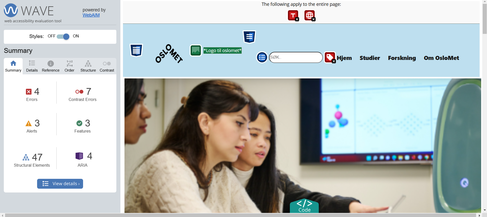

Introduction to Accessibility
Accessibility is about ensuring that a website, app, or digital product can be used by everyone, regardless of their abilities. This includes people with, for example, hearing impairments or motor challenges (e.g., those unable to use a mouse or keyboard).
In web development, accessibility involves using HTML, CSS, and JavaScript in a way that makes content understandable, navigable, and interactive for all users. It is important to ensure that websites and apps are user-friendly for everyone, because it helps expand the audience the website aims to reach and gets to be of use to as many people as possible.
Automated Test Results
Here are the results from the accessibility test using WAVE or Google Lighthouse.

Key Accessibility Features
For the accessibility of our website, we made thoughtful coding choices to ensure a user-friendly experience for all. We focused on using a clear semantic HTML structure, utilizing relevant heading tags (H1, H2, etc.) to maintain content hierarchy. Links are well-defined to ensure that screen readers can interpret them properly. In addition, interactive elements, such as buttons and form inputs, are fully keyboard navigable, allowing users to interact with them using the tab key. Forms have their proper labelling and error handling, optimized for both screen readers and keyboard navigation, ensuring a smooth user experience for individuals with disabilities. These efforts contribute to a more inclusive website, ensuring that all users can engage with the content effectively.